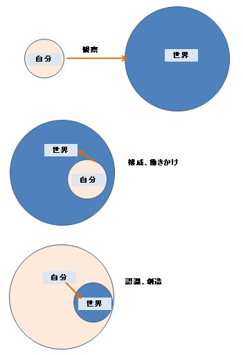
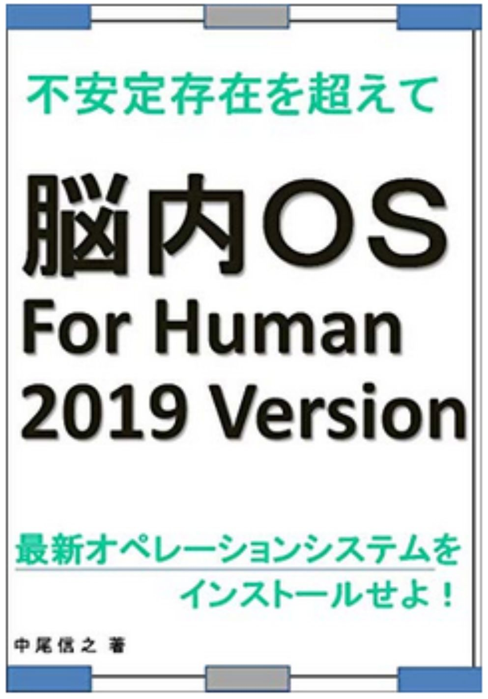
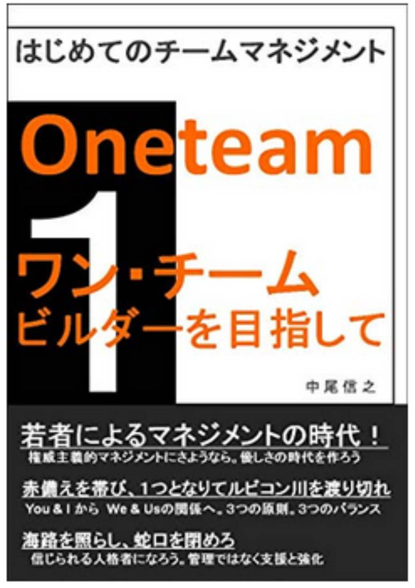
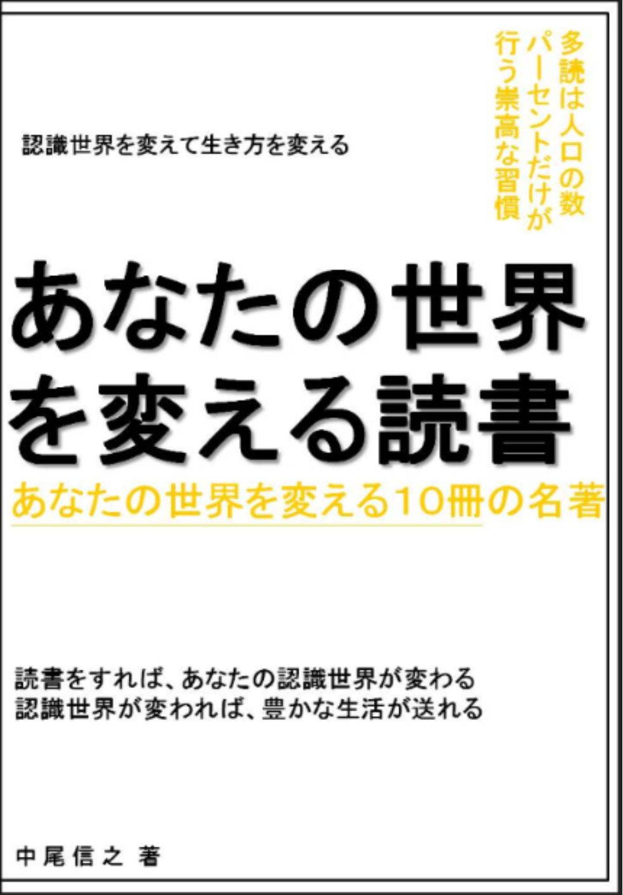
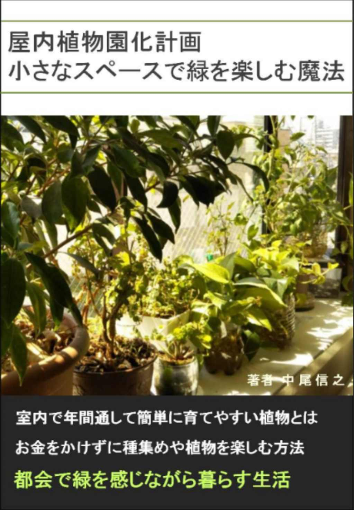
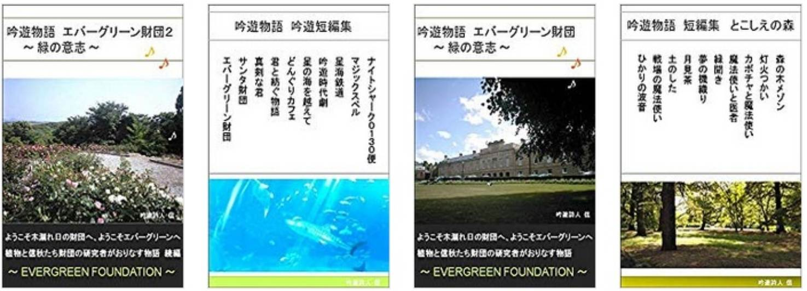

| あなたの世界を変える読書 あなたの世界を変える１０冊の名著 | |
| 中尾信之 | |
| (2018) | |
あなたの世界を変える読書
あなたの世界を変える１０冊の名著
□はじめに
・読書によって世界は変えられる 読書によってあなたが変えられる
□第一章 世界のとらえ方を変える本
１．超瞑想法 苫米地英人
２．人生ドラクエ化マニュアル ＪＵＮＺＯ
３．世界一美しい奇跡の数式 ノ・ジェス
□第二章 生き方のヒントをくれる本
４．世界でいちばん幸せな国フィジーの世界でいちばん非常識な幸福論 永崎裕麻
５．白本 高城剛
６．凡人を達人に変える７７の心得 野村克也
□第三章 科学によって見方を変える本
７．生命の暗号 村上和雄
８．世界は「 ゆらぎ」でできている 吉田たかよ し .
９．ワクチンのすべて 内海聡
１０．知識ゼロからの人口知能入門 清水亮
□おわりに
・ 伝説の武器、道具とともに

□はじめに
・読書によって世界は変えられる
読書によってあなたが変えられる
あなたの周りで、読書を習慣にして、人生の楽しみにしている人はどれほどいるだろうか。あなたは、どれだけ読書が好きだろうか。
文化庁の平成２６年の調査では、漫画や雑誌を除く一か月の読書量は、【「１、２冊」と回答したのが３４・５％、「３、４冊」は１０・９％、「５、６冊」は３・４％、「７冊以上」が３・６％だったのに対し、「読まない」との回答が最も多く、４７・５％に上った。】という結果が発表されている。１２年前に比べて読まない人の割合は１０％増加しているとのことである。
つまり今の日本では、５、６冊読めば上位の７％に入るということなのである。
私は最近、多読を趣味にするようになったが、自分と読書の関係を振り返ってみると、小学校の頃、学校の図書館で本を借りるのが好きで伝記物の本を良く読んでいた記憶がある。家では、毎日のように図鑑を眺めて色の綺麗な熱帯魚や、昆虫の写真を見て想像を膨らませていた。いつかはこんな色とりどりの魚を飼いたいなと思ったり、海外のこんな大きなクワガタやカブトムシがほしいなと思ったりしていたのである。
そこから少し読書に離れることになったのだが、高校生になった時に、ふと思い立って幼いころから大好きだったムツゴロウさんこと畑正憲さんの天然記念物の動物シリーズと、ムツゴロウシリーズを含めて１００冊ほどを読み、読書の楽しみに再び触れることになった。もともと、中学校の国語の教科書に畑さんの「ひとこえ」という、エッセイが掲載されていたのを思い出したのである。
そうして、すぐに文字を追うことに集中すること、そのものの楽しさや、著者の経験した世界や、考えを追体験する楽しさに惹かれたのである。私は、もちろん戦後の生まれではあるが、畑さんが子供時代に満州で過ごされた話や、ご両親のなれそめ、その時代の話など、自分の生きる時代を超えて、日本の本当の歴史を、味気ない歴史年表や脚色された教科書からではなく、畑さんの文章か生々しいリアルとして感じることができた。
畑さんと同じで、九州地方の福岡県生まれで、戦争中に朝鮮半島で過ごした五木寛之さんの本によっても、同じように戦争中の空気を味わうことができたし、この二人の方が、戦後、日本に戻られて、成長期をすごし、東京で同じような学生時代を過ごし、どのような業界で過ごされたかということ、そして戦後の日本の若者と、それを包む空気のようなものを感じることができた。また、学生運動の空気や、その組織の誤謬についても本から感じることができたのである。
このように、私たち人間は、実際に体験しなくても、また映像で見ていなくても、文章として本で読むことによって、他の人の経験や、その時代の空気を感じることができる。そして、そのことによって、自分の世界観を作ったり、世界観を変えていくことができるのである。
高校生の修学旅行で長崎県を訪れて原子力爆弾の被害について学ぶ機会を持ったが、この時、現場で強い違和感をおぼえ、自分のなかで消化しきれずにいたことがあった。それは 「優れた認識能力がある人間は、本で情報を得て、その当時の空気を感じて、物事の本質を理解することができる。であるのに、修学旅行は現場の表面だけを見て分かったふりをしている」 ということである。
また本だけではなく、音楽からも、その時の人々の感情や光景にまでも想いを至らせることができるのが人間である。詳しい説明を聞かなくても、その音楽がどのように、当時の空気を再現しているかということを感じることができる場合がある。あなたや、あなたの周りの人が、ドラマや映画をみて泣くとき、それは自分の部屋や映画館ではなく、その映像の世界を実際に感じているということなのである。
その場に行くことの重要性はいろいろな場面で聞かれ、その意味も正しいと思うが、それだけであれば、広島、長崎を訪れた人でないと、原子力爆弾の被害の悲惨さにいて理解できないということになるのである。しかし逆に、大量の意味のある読書をしていれば、そこでは聞けなかったような、真実が分かる。そうして初めて、なんという愚行だったのか、当時の帝国主義世界がどれだけ金におどらされた悲惨な世界であったかということも、その根がいまだに絶えていないことも理解できるのである。
話を再び、私の若かった頃のことに戻すと、私は畑さんが自分の世界観を作るうえで、師匠のような方であると思っていたので、大学を卒業して、就職をするまでの間にオーストラリアのケアンズにホームステイに行く際に、畑さんの本をお守り替わりに１冊持って行ったのである。
その旅行から帰った私は、和歌山県の職員として地方公務員になることが決まっていたのであるが、そのような心の余裕のあるタイミングで、大学時代の読書に対する不完全燃焼を取り戻すかのように、中古本屋さんなどで、立花隆さんや、大前研一さんの本を読むようになった。
そこで大前研一さんの「平成維新」という本を読んだことが、その後の数年の私の方向性を変える手助けをしてくれたのである。幼いころから、虫取りやザリガニ取りが大好きだった半面、なぜか世の中を良くしたいという想いが強く、政治家になりたいという気持ちを、２０歳を超えても持っていた。しかし、大学で学んだ知識や、それまでに読んだ本の知識では、どこをどのように良くすれば根本的な解決になるのかということは分からずにいたし、どのような考え方をすれば良いかという方法論すら分かっていなかったのである。それでも良心や正義感、誠実さがあれば改善や、改革を行っていけるのではないかと言う浅はかな考えから、政治家への道にもつながる可能性のある公務員という職をまず選択した。
ところが、若かりし私が手にした「平成維新」は、明確に日本を良くするであろう解決策を打ち出していたのである。また、そもそも、付与のものとして決まった国の形や統治体制を変えるという発想の自由度に驚かされたのである。
いまでは道州制という言葉は、誰もが知るようなキーワードであるが、大前研一さんは１９８９年のタイミングで発表していた。そして、国と地方の形を見直すと同時に、各省庁の役割と再編案を一般の著書において提示していた。つまり、政治家ではなくても、行政官でなくても、誰でも、そのような考えを明確にして発表することが可能なことを知ったのである。
そして、それをするための問題解決能力をコンサルタントと呼ばれる人たちが持っているということを知り、公務員として過ごした２年間の間は、問題解決能力を高めるための勉学を仕事以外の場で、できる限りすることにしたのである。
このように人は、本によって大きな衝撃を受けた場合は、考え方や、行動、そして生き方を容易に変えることができる。
その後、私は公務員をやめて、再び、ワーキングホリデイビザでケアンズに渡り、オーストラリアを一周した後、ゴールドコーストで大学院に編入することができた。これは公務員をしていた間に、大前研一さんのビジネス・ブレークスルーという衛星放送のビジネス番組を視聴し、ここで南カルフォルニア大学の大学院の講座を受けるという画期的なプログラムに参加して単位を取得していたためである。
実はそれだけではなく、公務員の間に、いくつかの遠隔教育を受け、公務員の世界しか知らない私は、ビジネスの最新の現場の情報や、コンサルタントの最先端の考えを体にしみこませるように吸収していった。地方公務員の現場にいながら、夜の１０時に家に帰ったとしても、深夜２時までビジネス・ブレークスルーで勉強をするなどしていた。今思うと、自分の臨場感のある世界が、公務員ではなく、自分が見聞きする、そして本で読む、ビジネスの世界になっていたのである。
そして東京に来てからは６つの職場を経験（２０１８年３月現在）し、今に至るのであるが、ここでもまた、苫米地英人博士の著作に感銘を受けて、そこから自分の世界を再構築し、生き方を再考しているのである。
もし、あなたが本を読むことによって、私のように生き方を変えるような大きな衝撃を受けていない場合は、あなたが、大きな力を持った名著に出会っていないということなのかもしれない。
もちろん本に影響を受けるかどうかは、読む人の読み取る能力や、好み、読む人のその時の置かれている環境や状態によって変わってくるのも事実である。しかし、本当に力がある本であれば、かつ読む人に伝わりやすく書かれている本であれば多くの人に、その考えを伝播する力を持っているのである。
今回、私はこの数カ月の間に、キンドルアンリィテッドの読み放題サービスの対象となっている本の中から感銘を受けた本を、みなさまに紹介させて頂きたいと考えている。
ここでは、ひとつの分野だけではなく、いくつかの分野からピックアップしており、ひとつの本の理解が、他の本の理解につながるような組み合わせになっている。人の脳や体はネットワークによって成立しているが、知識の世界も複数の知識が重なり合うことで、私たちの記憶に定着し、そして生きた知識となるのである。
逆に言うと、断片を理解しただけでは、つながらずに身にならないということがある。複数の本のインプットがあって、初めて、それぞれの主張がかさなりネットワークとなって、理解ができるということもあるのである。そのため、ここに紹介した本のうちで、最初に読んだ時に、もし分からない本があったとしても、まったく問題がない。そのような時は、分からなくても、さらっと読んで、次の本にいってほしい。場合によっては、別の本を読んでいた時に、同じ言葉が出てきて、最初分からなかったことが分かるようになるかもしれないし、１０冊を一巡してから二巡目に入った時に理解できるようになるかもしれないのである。そのようにすれば、あなたの世界の絵地図がだんだんと広がり深まっていくのだ。
絵地図を、まったく持っていない人は、人生において地図なしで旅をしているようなものであるのに対して、あなたが多くの断片で構成された、あなただけの絵地図を持っている場合、あなたはどこに行けば何があるか、どこに行けば楽しいかということを考えることができる。だから本を読むという行為が、あなたに力を与えてくれる。
次の章からは世界の認識の仕方についての本３冊。生き方に影響を与えるような、感じ方に関する本３冊。科学、技術に関するような本４冊について触れていきたいと思う。
あなたが私と同じように、これらの本から力を得て、あなたの人生が豊かになるのであればと願うものである。
読書によってあなたの世界観がつくられ、
あなたの認識する世界は変えられる。
認識世界が変われば、あなたが変えられる。
そして、豊かな世界を生きられるようになるのである。
私が、本シリーズで紹介した時点では、読み放題対象だった書籍が、その後、読み放題ではなくなっているものも出てきていますが、その点はご容赦を頂きたく思っています。そのような書籍については、私の推薦文を読むことで要点部分をご理解頂くか、興味を持たれた場合は、ご購入頂くか、その作者の他の読み放題書籍を手にとって頂ければと考えています。その点、ご了承頂きたく、よろしくお願いいたします。
「調査概要・文化庁資料より抜粋」
平成２６年３月に実施した調査有効回答数は２０２８人
調査対象：全国１６歳以降の男女
調査目的：文化庁が平成７年度から毎年実施しているもので、日本人の国語に関する意識や理解の現状について調査し、国語施策の立案に資するとともに、国民の国語に関する興味・関心を喚起する。
□第一章 世界のとらえ方を変える本
はじめにでは、私自身が、どのように本と出会い、生きてきたかということについて記したが、ここからは、現時点で、キンドル・アンリミテッドで読み放題対象となっているものの中で、私のおすすめをピックアップして紹介をしていきたい。
これを全て読むために読み放題プランをひと月利用しても９８０円なのである。９８０円であなたの考え方にインパクトが与えられ、あなたが新しい考え方を身につけて、新しい一歩を踏み出そうとすることにつながるならば、これほど気軽にできるトライはないのではないかと思う。
１．超瞑想法 苫米地英人
苫米地さんは２００冊を超える著書を出版されており、キンドル・アンリミテッドでも多くの本を読み放題で読むことが可能であるので、ここでどの本を紹介しようかと思うほどであった。そのため、超瞑想法を読んで、考え方に違和感がなく、その新鮮さに惹かれた方は、ぜひ他の本にも目を通して頂きたいと思う。
超瞑想法は、まさにこの章の題名にぴったりの本である。苫米地さんは、機能脳科学の専門家でありながら、人工知能や宗教や脱洗脳、政治、経済、科学一般など幅広い分野に精通されている、まさに知識の最先端、学問の最先端を作っておられる方である。
私は、大学時代、公務員時代に立花隆さんの本を読んで、彼の知識の多さに驚いたことがあった。実際、立花さんは多読で有名で、自身の事務所には、書籍を書く際に読み漁った本が大量に保存されているのである。そんな立花さんは、専門家のやっていることを解説するという役割を自身に割り当て、いろいろな専門分野の最先端の情報を、一般の人に分かりやすくかみ砕こうとされておられた。宇宙飛行士の取材をもとに書かれた「宇宙からの帰還」が私も最も好きな本であった。
ところが、苫米地さんの本を読むようになって、立花さんとの違いに気づかされた。立花さんは偉大なジャーナリストであるし今でも尊敬しているが、専門家の研究を噛み砕く解説者であるから、池上彰さんのようなもので、自身が専門分野を作っているわけでも、切り開いているわけでもないのである。しかし苫米地博士の場合は、自身で最先端の研究をされている分野が非常に広く、その分野を極めるにあたって、周辺の分野も極めていってしまうのである。そして、何より、読む人のレベルにあわせて理解しやすいような作品作りをされているため、オススメなのである。
以下は、本文からの引用である。
「この世界、この宇宙のすべてが、あなたの心が生み出したものであるならば、あなたの心の側を制御することで、自分や世界を自由自在に変えることができるようになるからです。」
この文章は、自分の認識の仕方しだいで自分の感じる世界を変えることができるということを表しているが、その具体的な方法論を超瞑想法という方法で解説しており、本書であなたは、あなたの認識世界の変え方を知ることができるのである。
第一章で紹介する３冊は、このような世界観を変えるために適した書籍であるが、章の最後で私が他の書籍にも記載した、世界観の図を紹介させて頂きたいと思う。超瞑想法では、圧倒的な情報量を得ることが、重要であることも記載れている。このことは苫米地博士の「圧倒的な価値を創る技 術[ ゲシュタルトメーカ ー] 」という本で詳しく書かれているため、参考にして頂きたい。
２．人生ドラクエ化マニュアル ＪＵＮＺＯ
この本は名前のとおり、人生をドラゴンクエストと見立てて、楽しんでしまおうという画期的な発想の本である。ドラゴンクエストを販売しているエニックスに入社したこともある著者が自らの体験をもとに人生を切り開いていく考えを非常に簡単に分かりやすく説明してくれている。
ゲームの要素を人生に置き換えて考えてみるという抽象度の高い思考実験を自ら編み出して、優れた脳科学者などがたどり着いたような自分の認識世界のとらえ方を変える方法を、ドラゴンクエストをベースに編み出している優れた本なのである。
いろいろなことをゲームに見立てるゲーミフィケーションについて書かれた本は他にも存在するが、ドラゴンクエストはあまりに有名で内容を知っている人が多いし、爆発的に人気を博しただけあって、そこに込められている内容が人生の楽しみ方と似ているところもあり、それを例にとって説明をしてくれているので、理解がしやすいのである。
「ゲーム目的を達成する事以上に、ゲーム目的達成を目指し遊んでいる最中にこそ楽しみの大部分があると言えるだろう。」というように、人生は目的を達成することだけが重要なのではなく、目的達成に向かっている人は、その途中のプロセス自体も楽しめているという本質も解説してくれている。文章量も多くなく読みやすいように整理してくれているが、そこには世界観を変えるエッセンスが溢れている。
３．世界一美しい奇跡の数式 ノ・ジェス
本書も、第一章で紹介している他の二冊とともに、自分の認識している世界の見方を変えるために役立つ本である。文章の最初が少し暗い始まり方である点と、文章の大部分において、インタビュー形式をとっているため口語体で書かれている部分が多く、若干、客観的に読みにくい感がある。しかし、内容としては、他の二冊に勝るとも劣らない内容となっている。
本書単体では、理解しにくい内容も、第一章で紹介した他の二冊を読んだ人なら理解しやすいということもあるし、第三章で紹介する科学に関する本を読んだ人なら、さらに理解しやすいということもあるように思われる。
下記は本書からの引用部分である。
「自分と自分の宇宙が、本来の心、本来の自分とすべてひとつながりである、という認識世界に変わっていたのでした。」
そして重要なキーワードとして誰もが自分の世界の「創造主」であるという言葉がある。これは超瞑想法でふれられているように、自分の認識世界の見方は自分で思うように変えられるということや、人生ドラクエ化マニュアルにあるように、ゲームの内容や目的を自分で決めるということと同じことなのだ。このように、作者によって、いろいろな表現方法で、世界は自分で決められることを教えてくれている。
この本の表現や、他の本の表現も含めて、文章で見ただけでは、考えにくいことを私なりに図式化したものが下記である。これは、「頑張りすぎない子育ての考え方 子育ては最大の社会貢献、最高の贅沢」という私が、三冊目の電子書籍として出版した本の中に表現したものを、そのまま転記したものである。

そして、以下は、右の図の説明として私が、前述の子育てに関する本で解説した内容である。
「人は、一般的に考えられているように自分の認識の外に物理的な世界を持っている存在でしかない場合、この世界から切り離された孤独な存在となってしまう。自分と世界は別個のものだから、自分は世界を観察する対象としてとらえるのである。
しかし、認識を変えると自分が世界全体の中の重要な一部であることを知るのである。この時、世界と自分は一体であるということができる。そうすると、積極的に世界への働きかけがしやすいメンタリティを獲得していると思われる。そして、さらに思考を進めると、自分が創造主であるという認識科学の境地に到達することができるのである。
この認識論にたつことができたものは、世界はあなたの認識の内側に存在する、つまり世界はあなたが創造しているとさえいえるのである。」
第一章では３冊の本を紹介させて頂いたが、ここからも分かるように、１冊ではなく、３冊まとめて読むことで、それぞれの著者による表現方法の違いを超えて、その本質を理解していくことができるのである。たとえ、そのうちに自分にあわない１冊があったとしても、残りの２冊で深い理解ができていれば、まったく問題がないということである。
□第二章 生き方のヒントをくれる本
さて、第二章では、第一章より、もう少し気軽に読める本でありながら、生き方のヒントを与えてくれるような本を紹介させて頂きたいと思う。これも第二章の本単独でというより、第一章で、認識世界をがらっと変えていこうとしている上に、このような少しソフトな、ヒントをかさねていくということが、思考のネットワークを作っていくうえで意味があるように思うのである。
４．世界でいちばん幸せな国フィジーの世界でいちばん非常識な幸福論 永崎裕麻
この本では、フィジーに移住した日本人の方が、どうしてフィジー人の方々が幸せに生きられているかということを、いろいろな現地でのエピソードを交えて説明をしてくれている。単なる島の解説ではなく、幸福論として一級の価値を備えた作品に仕上がっている。それにも関わらず、本文中で、現地の人々との会話が関西弁で書かれており、面白く読むことができる。
本書で教えられることは、フィジー人と私たち日本人では、考え方がまったく違うのだということだ。どちらが正しいと言い切ることはできないとは思うのだが、そういう考え方をしてもいいんだな、そういう考え方が常識の人々もいるんだなと思うことができれば、私たちの日本における常識というものが絶対ではないということに気づかされるのである。これだけで、メンタルブロックがひとつはずせたと言えるだろう。
「植民地政策のスペシャリストだったイギリスでも、テキトーなフィジー人を働かせるのは至難の業だったようです。」と本文中にあるように、明治維新後、せっせと富国強兵にのめり込んでいった日本人とは、まったく違う感じ方や生き方を、今も続けているのがフィジー人の方々なのだ。
幸せになろうとして幸せになっているのではなく、無理をせずに思うままに生きているので、普通に幸せなのだ。そして、私たち日本人が自分の過去に縛られたり、未来のために今を犠牲にしがちなのに対して、フィジーの人たちは今を最大に楽しんでいる。そういう生き方こそが、本当の幸せにつながるのではないかと教えてくれるのである。
この本は、いろいろな示唆に富んでいながら、本当に楽しめるため、私は、繰り返し読んでみようと思っている１冊である。
ここでは私が内容について詳しくふれずに、ぜひ皆様にも読んで頂きたいと思っている。
５．白本 高城剛
高城剛さんの白本は現在、第三弾まで出版されている。また、黒本という少し世間では公にされないような情報も記載した本も第三弾まで出版されており、すべて現在はキンドル・アンリミテッド読み放題対象であり、比較的読みやすい文体となっているので、白本１を気に入った方は、他の本も手に取って頂けたらと思う。
高城さんはハイパーメディアクリエイターという肩書をお持ちで、沢尻エリカさんと結婚していたというツワモノである。私は、高城さんの本とたまたまキンドルで出会って拝読するまで、まったく高城さんのことを存じ上げていなかったため、自分が知らなかったことに驚いたくらい、面白い考え方、生き方をされている卓越された方である。
ほかにも「多動日記」という本を書かれており、世界中を飛び回っているのだが、カバンの中身を本にされたりしている。荷物を極端に持たないことや、家や、車やいろいろなものを所有せず、土地に縛られず自由に多動できる生き方を紹介してくれている。
現在、私も家も車も購入していないが、ひとところに固定しない生き方のためには、今の選択は間違っておらず、このスタイルを続けるべきだという勇気をくれた。
「過剰な消費を必要としなければ、過剰な労働は必要なくなりました。」
というふうに語っておらえるように、このような自然な価値観こそが、現在日本に生きて、常に過剰消費をするように刺激を受け続けている私たちには必要なのではないかと思う。
６．凡人を達人に変える７７の心得 野村克也
いわずとしれたヤクルト、阪神、楽天などの球団監督をされて、それぞれのチームを強化し、野村再生工場と言われた野村監督の作品である。
この本の考えは、非常にオーソドックスな内容が記載されているが、私たちは、普段、常識にとらわれて、オーソドックスな定石すら思考に上がらずに、あまり大切にしないことがあるのではないかと思い、ピックアップした。
野村さんと言えば、ぼやきが有名であるが、きちんとした考え方があってこそ、厳しいプロの世界で挫折した人さえも、再度、輝かせることができるのである。
高校生で才能が認められドラフト１位で入団しても、ほとんど活躍できずに球界を去る選手が少なくない世界で、何人もの選手を再度輝かせるということは、方法論がないと絶対にできないことなのである。
野村監督自身もテスト入団という形で球団に入っており、自分自身が頭を使って、方法論を開発しながら、球界で一位になれるように実力を磨いていたという事実がある。
そして、本書の中でも、人を作るという意味で読書が大切であるということを記載しておられる。いいかげんな考え方では、ビジネスの世界もスポーツの世界も成果を出すことが難しいということである。
「頭を使って創意工夫をする」ということ、これが何よりも大切なのだ。そして努力は誤った方向にしても意味がないということを、とかく根性主義の好きな日本の中でも、やはり一流の選手、一流の監督は心得ていて、意味のある研鑽をしていることが分かる。
野村さんは、単なるスポーツ選手というだけではなく、単なる監督というだけでもなく、一流の世界観を持った人格者であるということが伝わる本である。
□第三章 科学によって見方を変える本
第三章では、遺伝子、宇宙、医療、人工知能の４つの本を紹介したいと思う。これらの本を読んで頂けると、第一章で紹介した本で読んだ内容と似通っている記載があることに気づかれると思う。最先端の認識世界の考え方は、最先端の科学と方向性をひとつにしているからである。
いろいろな学問分野において専門化が進むほど、どんどん枝葉に分裂してしまい、少し隣の内容も分からない研究者が増えると言われるが、抽象度が高い方は、学問分野を超えた統合理論を打ち立てていく力がある。
７．生命の暗号 村上和雄
遺伝子研究に携われている村上さんが、無味乾燥の科学ではなく、人の可能性を引き出すような前向きな思考をするヒントをこの本で述べている。また、その観点をもう少し全面に押し出した「スイッチ」という本では、どのように遺伝子をオンにするスイッチを押すかということに絞って解説がされている。
生命の暗号でも、「６０兆の細胞と３０億の遺伝情報のほとんどは眠っているがオンにすれば奇跡を起こせる」ということを解説されており、これを聞くだけで、私たちの可能性が非常に大きいことを知らされる。
環境を変えることで成果をだしていく遺伝子がオンになりやすいという言葉は、高城さんの多動という生き方ともつながる要素もある。
以下は本文からの引用である。
「心を入れ替えるとは心の変化により、いままで眠っていた遺伝子が活性化することである。行き詰まりを感じているとき、環境を変えてみるといい。動くと人は伸びる。」
「わるい遺伝子をＯＦＦにし、よい遺伝子をＯＮにする方法として、どんな境遇や条件を抱えた人にでもできるのは「心の持ち方」をプラスにすることである。これが遺伝子に大きな影響を及ぼすと考えられる。」
８．世界は「 ゆらぎ」 でできている 宇宙、 素粒子、 人体の本質 吉田たかよ し .
宇宙の研究をされた後に、医学の道に入られた吉田さんの著作は非常に魅力的である。宇宙と医学をつなぐ広い視野を与えてくれるのである。
吉田さんによると宇宙も、原子も、私たちの人体もすべてが「ゆらぎ」でできていて、このゆらぎがあるからこそ、調和がとられているというのである。
「生命の暗号」や本書、それから他の著書を読んでいると、病気という症状自体を、それほど悪くとらえずに、肯定して病気の症状とつきあっていくというような、考えを持てるようになってくる。言い方によっては病気も、ひとつの「ゆらぎ」と言えるのかもしれない。一般的な医療や科学の常識とは違うのかもしれないが、科学的にいろいろな分野の最先端の研究をされている方ほど、このような、ゆるやかな考え方をされているし、実際に化学的な薬だけではなく、気の持ちよう、精神的な心のコントロールをすることが大切ということに気づかれているのである。
ここでも第一章で紹介した、自分の認識世界を変えるという考え方が、科学的に肯定されうるということが、第三章の書籍を読んで頂けると理解いただけると思う。
以下の二つの文章は、本文からの引用である。
「物事は安定しているのが基本なのだという先入観を捨てることで、現象の本質が見えてくる」
「人類が絶滅を避ける上で大切な役割を果たしている、つまり、うつ病は人類が生き残るための手段だったのだという、常識を根底から覆す学説が発表されたのです。」
うつ病という他の人と違う行動をとる人がいることによって、全体が同じ行動をすることによるリスクを避けられ、伝染病の蔓延などを防ぐことにつながるなど、プラスの面もあるというのである。
宝くじや保険会社の宣伝に騙されて誰もが同じ行動をとるようなことをせずに、自分の考えで、生きていくのが良いということである。
９．ワクチンのすべて 内海聡
日本の医療は検査づけ、薬付け、病院づけにする医療システムとなっていると言われる。
私は、患者側は３割負担という医療保険制度そのものが、医療の提供側だけではなく患者側も含めて、この体制を維持・強化することにつながっていると思う。
たとえば、国民皆保険を前提としても、３割負担ではなく、５割負担であれば、医者にかからずに済むように、人々はより慎重になるが、３割負担であれば、とりあえず薬をもらおうというように、容易に医師や薬に頼るモラルハザードを生むことになりやすいのである。
しかし、薬の薬効はかなり限定的で、診断が当たる率が低いうえに、薬が効く率も低く、あわせて本当に薬効で治るのは、かなりの低率であるともいわれる。
だから、かなりの部分は人間の単なる思い込み（プラシーボ効果）とまで言われている。人間の自然治癒力というものが、それだけ強いのである。
ワクチンについても、その効果に疑問が呈されているが、日本ではあまり公にされないのも社会体制によるものであると思われる。
この問題に真っ向から挑んだのが、内海さんのワクチンのすべてである。ワクチン自体は仕様書に劇薬と書かれており、利用には非常に配慮が必要であるが、そのような説明は丁寧にはされずに、被害率は低いということだけが伝えられるのである。
本来、免疫機能というのは、口から入り、体内を通っていく過程で、免疫システムが働くようになる。しかしワクチン接種は死んだ病原菌や、不活性化した病原菌を注射によって直接、血管に打つという行為であり、免疫システムを無視した危険な行為であるという。
またインフルエンザワクチンについても、その効果が疑われている。毎年流行するインフルエンザの種類は異なり、予測不能であるうえに、開発には数カ月から半年かかり、実際に作ったワクチンは今年はやるインフルエンザのワクチンと型が異なる可能性が高いのである。そのため今年のインフルエンザを防ぐどころか、関係のないインフルエンザの種を血管に注射してしまうことになるのである。このような危険性は、インフルエンザに関わらず、他の病原菌のワクチンも同じなのである。
医療に関する常識が、いかに作られたものかが、ワクチンのすべてを読めば分かるようになるのだ。
１０．知識ゼロからの人口知能入門 清水亮
人工知能については、いろいろな情報が飛び交い、私達の仕事を奪うというように危惧する声も少なくないが、さまざまな仕事を人工知能が行なってくれることで、私達、人間の働く時間が短縮されたり、働かなくても良くなるのであれば、それを前向きに捉えて、新しい社会を考えるほうが健全なように思う。働かなくても良い社会では、たとえば、ベーシックインカム制度の積極的導入をすればよいのである。
本書は後段で、以下のように記し、これからの社会こそ人間らしさを私達が大切にしていくべきだということを教えてくれている。
「ＡＩが食料を自動供給し、調理も行い、会社の経営戦略から何から何までやってくれる、そうした時代になるともはや我々は「お金とは何か」「働くとはどういうことか」といった、より哲学的な問題と向き合う必要が出てくる」
「知能革命後の世界で一番価値が高いのは、思いやりがあり、真心を持って人と接することができる人に違いない。身体能力や知的能力に劣っていたり、これまではむしろ「不器用」「変わり者」と呼ばれていたような人たちが、人への愛を武器に活躍する社会こそが人工知能により生まれるであろう次なる世界の姿ではないか。」
このように言われると、人工知能に対する印象が変わるのではないだろうか。
□おわりに
・伝説の武器、道具とともに
今回、私とあなたはこの１０冊のリストを手にした仲間のようなものであると思う。人生ドラクエマニュアル化ふうにいうなれば、あなたは伝説の勇者の武器、道具を１０も手にしたことになるのである。
しかし、いくら武器や道具が優れていても、これらのものは私達が使い慣れるまでは、まだ本当の力を発揮することはないかもしれない。それでも焦ることはない。キンドル読み放題の魔法によって、あなたは思い出した時に、またこの１０冊に戻ってきて、何度でも、好きなものだけ、使い慣れるまで楽しめばいいのである。
今回、紹介させて頂いた１０冊は、それぞれが素晴らしい知識のつまった作品でありながら、１０冊のつながり、重なりによって、あなたが新たな世界観、認識世界を創るための一つのまとまった知識体系であるとも言える。そしてまた、あなたとそれぞれの作品の著書にとっての初めての出会いであるとも言える。あなたが、さらにこの伝説の武器、道具を使い慣れ、あなたの絵地図を広げ、深めていくために、ここから、あなたなりの読書の旅を楽しんでもらえたらと考えている。
あなたも、私も今この時代に生きる旅人である。
どうせ旅をするなら、読書という最強の武器、道具を携えて、楽しい人生にしようではありませんか。
あなたと、私の旅が楽しいものとなりますように。
本書を、手にして頂き、本当にありがとうございました。
中尾信之
□作品紹介

脳内ＯＳ ＦＯＲ ＨＵＭＡＮ ２０１９ ＶＥＲＳＩＯＮ
最新オペレーションシステムをインストールせよ！
https://www.amazon.co.jp/dp/B07N1T1TZF

自分を生きる天職（転職）のすすめ ～１００％実力を表現する面接法～
http://www.amazon.co.jp/dp/B07BD3K67Z

はじめてのチームマネジメント ワンチーム・ビルダーを目指して
https://www.amazon.co.jp/dp/ B07BJ98FTT

購買本部は本当に必要か スタッフ機能のあるべき姿を求めて
https://www.amazon.co.jp/dp/ B07BQ9BFDS

あなたの世界を変える読書 あなたの世界を変える１０冊の名著
https://www.amazon.co.jp/dp/ B07BT28HLV

あなたの世界を変える読書１２ あなたの世界を変える１０冊の名著
https://www.amazon.co.jp/dp/B07PS8263Z

アニオタ革命 アニオタが世界を変える 銀河英雄伝説 神のみぞ知るセカイ から探る社会変革の可能性
https://www.amazon.co.jp/dp/B07CRQ3WWD

屋内植物園計画 小さなスペースで緑を楽しむ魔法
https://www.amazon.co.jp/dp/B07CWRK2CN

在庫管理の正解 在庫管理は、こんなに簡単だった
https://www.amazon.co.jp/dp/ B07GFS2YDN

新宿御苑の四季 写真集
Four seasons of Shinjuku Gyoen National Garden
https://www.amazon.co.jp/dp/ B07N83G4L5

吟遊物語集 吟遊詩人信